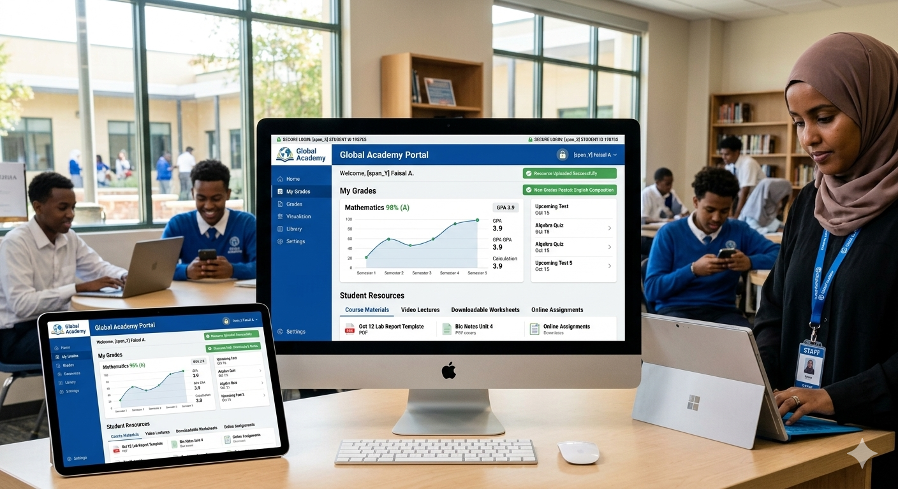
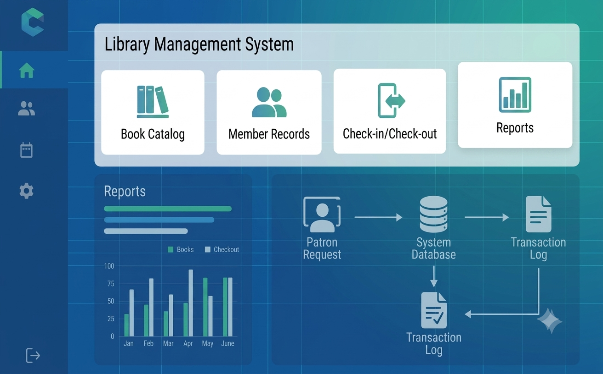
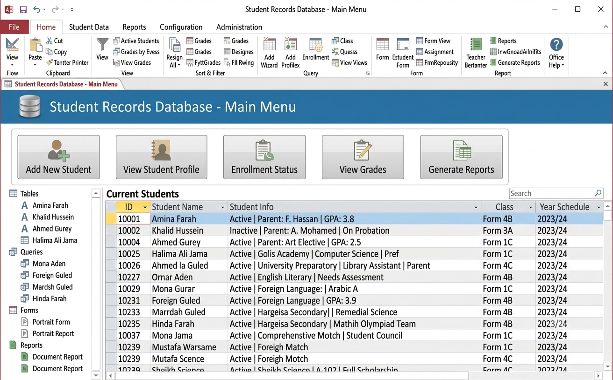
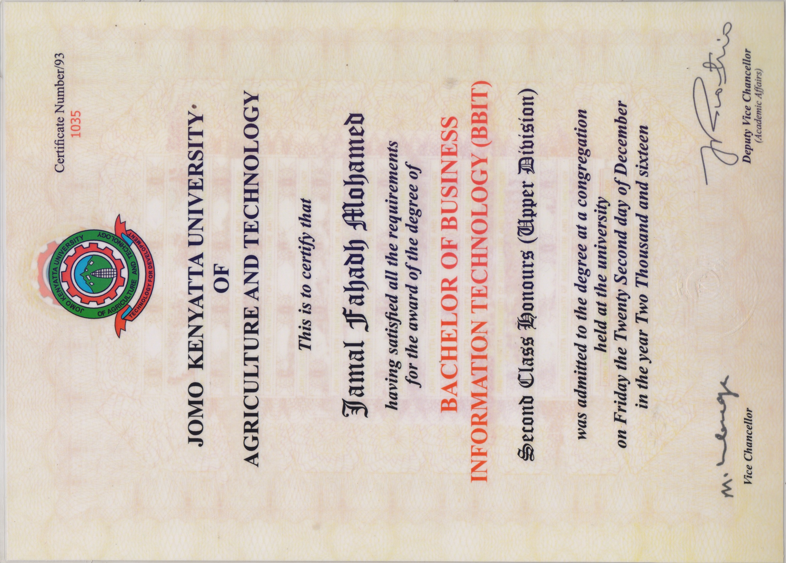
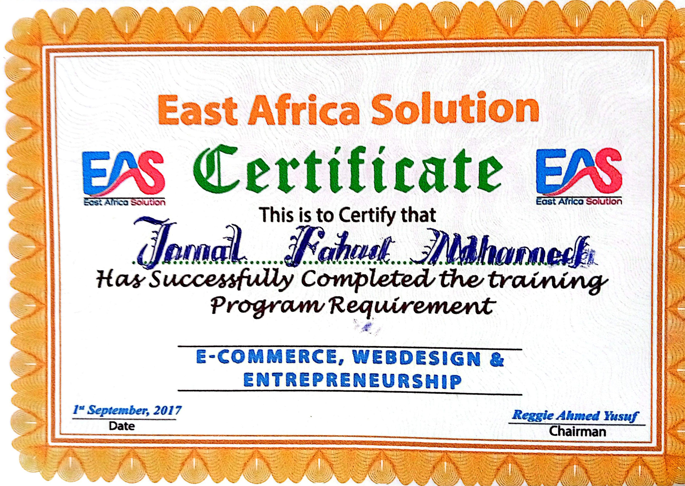

Jamal Fahadh Mohamed
Pearson Edexcel ICT Teacher | Digital Skills Trainer | Program Support | Software Skills Instructor
I help schools and organizations stay organized, efficient, and digitally strong through ICT teaching, program support, document management, reporting, and practical technology skills. My background includes classroom instruction, Microsoft Office, digital tools, record keeping, and supporting daily operations with professionalism and attention to detail.

Professional Profile
Empowering learners and supporting organizational efficiency.
ICT Educator & Program Support Professional
I am an ICT educator, digital skills trainer, and program support professional with experience in teaching, documentation, administration, and technology-based operations. I hold a Bachelor of Business Information Technology and have worked in environments that require communication, planning, coordination, and reliable day-to-day support.
My strength is combining technical knowledge with practical organization skills to help teams work more effectively while supporting learners and workplace operations.
Teaching Philosophy
I believe technology education should be practical, engaging, and relevant to real-world applications. My goal is to develop confident, creative, and digitally responsible learners while also bringing strong support skills that improve workflow, communication, and organization.
Key Achievements
Professional impact and accomplishments.
Technical Skills
Core competencies and areas of expertise.
Web Development
HTML, CSS, Responsive Design
Microsoft Office
Word, Excel, PowerPoint, Access
Computer Lab Management
Maintenance, Networking, Troubleshooting
Graphic Design
Digital Content and Creative Design
Digital Skills Training
Beginner to Advanced Level Training
Educational Technology
Learning Platforms and ICT Integration
ICT Support
Technical Support, Troubleshooting, User Assistance
Networking
LAN, Routers, Switches, Connectivity
Pearson Edexcel ICT
Curriculum Delivery and Assessment
Program Support Skills
Skills that strengthen operations, coordination, and documentation.
- Office administration and document handling.
- Reporting and data entry.
- Digital filing and record management.
- Microsoft Word, Excel, PowerPoint, and Access.
- Scheduling, coordination, and follow-up support.
- Communication with staff, students, and stakeholders.
- Event, meeting, and activity support.
- Basic troubleshooting and ICT assistance.
- Maintaining organized digital and physical records.
- Supporting smooth day-to-day operations.
Teaching Competencies
Practical classroom and learner support strengths.
- Lesson Planning.
- Classroom Management.
- Student Assessment.
- Curriculum Delivery.
- Differentiated Instruction.
- Project-Based Learning.
- Educational Technology.
- Learner Engagement.
- Practical ICT Training.
Professional Experience
Teaching, ICT support and educational technology experience.
ICT Teacher
- Delivered ICT lessons and supported digital learning activities.
- Managed computer laboratory resources and technology equipment.
- Prepared lesson materials, student records, and academic reports.
- Assisted with school ICT operations and technical support.
- Communicated with staff and students to ensure smooth learning delivery.
- Supported organization of digital resources and classroom materials.
Library Support Officer
- Managed digital cataloguing and library record systems.
- Organized learning materials and maintained resource accessibility.
- Supported students and staff with resource requests and information access.
- Helped improve workflow through structured documentation and filing.
- Assisted with daily administrative and support tasks.
Computer Studies Teacher
- Taught basic computer studies and digital skills.
- Prepared lesson notes, class materials, and student guidance support.
- Introduced learners to safe technology use and practical computer applications.
- Supported website-related learning activities and simple digital tasks.
- Worked with students in a structured, organized learning environment.
School Contributions
Additional responsibilities and support areas.
- ICT Laboratory Management.
- Educational Technology Support.
- Digital Resource Development.
- Library Technology Support.
- School Website Projects.
- Staff ICT Assistance.
Featured Projects
Selected educational and technology projects.

School Portal
I contributed to the design and content structure of the portal to support communication and learning access.

Library Management System
I supported the project by helping organize the database workflow and user records.

Student Database
I contributed to the development of a structured student record system using Microsoft Access.
Certifications & Qualifications
Academic achievements and professional competencies.

Bachelor of Business Information Technology
University Degree in Business Information Technology.

Web Design & Development
Responsive website design and development skills.
KCSE Certificate
Kenya Certificate of Secondary Education.
Pearson Edexcel ICT
ICT curriculum specialist.
Microsoft Office
Advanced office productivity skills.
Graphic Design
Creative digital content production.
Digital Skills Training
Technology skills development.
Educational Technology
Technology integration in education.
Computer Lab Management
ICT laboratory administration and support.
Safeguarding Commitment
Student wellbeing and responsible technology use.
Committed to maintaining a safe, inclusive and supportive learning environment that promotes student wellbeing, digital citizenship, child protection awareness and responsible technology use.
Testimonials
Feedback from former colleagues and supervisors.
Former Colleague
“Jamal is professional, supportive, and easy to work with. He communicates clearly and always contributes positively to the team.”
Former Supervisor
“He is dependable, organized, and committed to quality work. His ICT teaching and support made a real difference in our school environment.”
Professional Documents
Reference letters available upon request, and I can facilitate contact with my referees if needed.
Why Hire Me?
Reasons I can add value to your school or organization.
- 7+ years ICT teaching experience.
- Strong classroom management.
- Pearson Edexcel ICT focus.
- Practical hands-on teaching style.
- Digital skills training expertise.
- Educational technology experience.
- Computer lab management skills.
- Immediate availability.
Contact Me
Available for ICT Teaching, Digital Skills Training, Educational Technology Projects and Consulting.
Get In Touch
I am immediately available for:
- ICT Teaching Positions.
- Digital Skills Training.
- Educational Technology Projects.
- Computer Lab Management.
- ICT Support & Technical Assistance.
- Website Development Projects.
Let's discuss how I can contribute to your organization.
Contact Information
Name: Jamal Fahadh Mohamed
Phone: +252 63 6710907
Email: teacherfahadh@gmail.com
Location: Hargeisa, Somaliland
Website: fahadict.github.io/tech